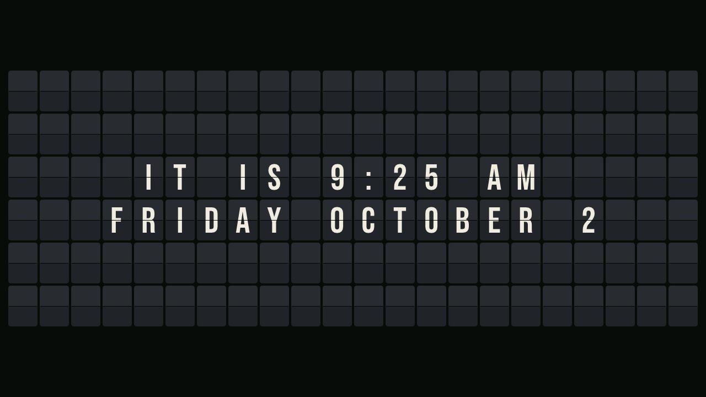

FlapBoard
Firmware 0.10.0: a split-flap sign for the M5Stack Tab5, with messages, clock, weather, photos, a schedule, motion sensing, a relay output and Home Assistant. Source, docs and licence (GPL-3.0) on GitHub.

1. Install the firmware
- Use Chrome or Edge on a desktop (Web Serial is needed; Safari and Firefox do not have it).
- Connect the Tab5's USB-C port to the computer and switch the Tab5 on.
- Click Install below and choose the Tab5's port (it is usually called USB JTAG/serial debug unit).
If no port shows up or the install fails: hold the Tab5's power button to put it in download mode, then try again.
Installing replaces whatever firmware the Tab5 had and erases its settings. A sign that already runs FlapBoard
can update itself instead: Status > System > Update firmware on its web page, with the
-update.bin file from the latest release.
2. Set it up
- Put a microSD card in the Tab5. The sign reads FAT32; if the card is exFAT (most cards over 32 GB are), use Files > Format SD card on the sign's web page once it is on Wi-Fi. That erases the card; Windows and macOS still read and write it afterwards.
- Wi-Fi: the first time, the sign opens a FlapBoard-XXXX hotspot. Join it from a phone; the setup page opens by itself. Pick your network and type its password.
- Open http://flapboard.local/ (or press and hold the screen to see its address and a QR code) and set the time zone, weather location, messages and schedule.